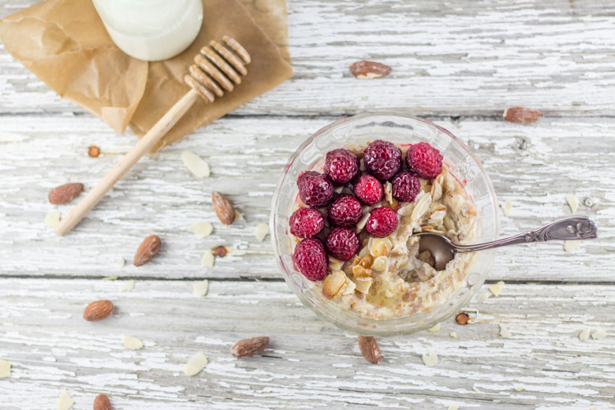

Porridge framboise amande et lait d’amande

Aujourd’hui j’ai décidé de vous parler d’une recette toute simple, celle du porridge au lait d’amande!
Souvenez-vous il y a quelque temps je vous parlais de mon extracteur de jus Kuvings et de toutes ses qualités! Je vous avais surtout promis une recette avec et je vous propose donc du porridge…..(bizarre pour une machine qui est censée ne faire que des jus!) N’allez pas croire que mon extracteur fait du porridge de A à Z^^, il m’a juste permis d’obtenir un délicieux lait d’amande avec lequel j’ai pu faire mon porridge (parfait pour les intolérants au lactose!!). J’aurais pu me contenter de photographier mon lait d’amande et partager avec vous mes impressions sur l’extracteur mais je non je n’aime pas écrire une recette pour écrire une recette si je n’apprécie pas celle-ci. Boire du lait qu’il soit végétal ou animal directement dans un bol je n’ai jamais vraiment aimé ça. J’ai toujours besoin de rajouter des fruits, du chocolat ou d’en faire quelque chose! Dernièrement j’ai redécouvert le porridge ou « bouillie » si vous voulez la version française et j’ai décidé d’essayer une version avec du lait végétal et notamment du lait d’amande. Ce qui m’a motivé à faire du lait d’amande c’est bel et bien mon extracteur car avant j’avoue que j’avais un petit peu la flemme d’en faire alors que là ce fut très rapide. Pour celles que ça intéressent, j’ai juste eu besoin de verser mes amandes et mon eau dans la cheminée de l’extracteur et la machine a fait tout le boulot toute seule!
Pour 180g d’amandes j’ai pu récupérer 500ml de lait et nous faire un délicieux porridge avec! Ce que je déteste avec tous ces robots c’est le nettoyage mais là je dois avouer que ce fut aussi assez rapide donc je suis très contente d’avoir fait le choix de passer à l’extracteur comme d’autres blogueuses me l’avaient conseillées!
Une fois mon lait d’amande obtenu je n’avais qu’une hâte c’était d’être au lendemain matin pour faire enfin mon porridge 🙂 et nous nous sommes régalés! Le porridge, pour ceux qui ne connaissent pas est une sorte de bouillie d’avoine à laquelle on peut ajouter des fruits de saisons, des fruits secs et tout ce qui nous fait envie (enfin peut être pas TOUT non plus!)! Pas mal de personnes en consomment pour maigrir car l’avoine aurait un effet sur la satiété (je ne suis pas sur que les miens fasse maigrir vu ce que j’y ajoute) mais c’est avant tout délicieux (malgré un aspect pas très glamour^^) alors laissez vous tenter!!
Ingrédients
- Amandes entières - 180g
- Eau - 180ml
- Amandes effilées - une poignée
- Framboises
- Miel
- Lait végétal ou animale - 500ml
- Flocons d'avoine - 100g
Instructions
- Laisser tremper les amandes pendant 12h
- Égouttez les
- Avec l'extracteur j'ai pu récupérer 500ml de lait (il faut la même quantité d'eau que d'amandes)
- Dans une casserole, verser le lait et les flocons d'avoines
- Faire cuire sur feu moyen
- Remuer régulièrement jusqu'à ce que ça devienne "une bouillie" (les flocons d'avoines vont absorber le lait) Il faut compter 10 bonnes minutes de cuisson
- Faire griller les amandes effilées dans une poêle
- Disposer les framboises et les amandes sur le porridge
- Arroser de miel
- A déguster chaud ou froid selon vos goûts!!

Les tips de la communauté
Recette simple et pratique très appréciée pour un petit-déjeuner équilibré. Les commentaires soulignent que le porridge cale bien et évite le creux de 10h. Un lecteur approuve l'utilisation du lait d'amande comme alternative et mentionne des variantes réussies avec banane, sans sucre ajouté.
Astuces
- Le lait d'amande apporte de la douceur en bouche
- Ajouter une pointe de vanille pour plus de saveur
- Parfait avant une séance de sport pour l'énergie
- Peut se préparer au micro-ondes en 2 minutes 30 quand on est pressé
Variantes suggérées
- Ajouter de la banane écrasée à la place du sucre
- Utiliser différents fruits frais ou secs pour varier les plaisirs
- Préparer avec différents laits végétaux